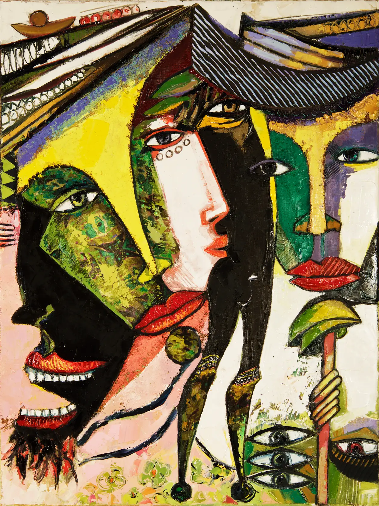
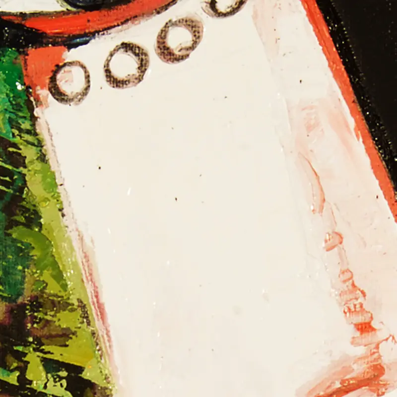

In the Shadow of the Cimarron
- Año
- 2019
- Técnica
- Pintura
In the Shadow of the Cimarron, 2019: un cuadro del pintor cubano-noruego Ramón Eduardo Haití Filiu.
Consultar esta obra
In the Shadow of the Cimarron, 2019: un cuadro del pintor cubano-noruego Ramón Eduardo Haití Filiu.
Consultar esta obraDetalleRecorte de 800 píxeles de la fotografía original, a resolución completa.
